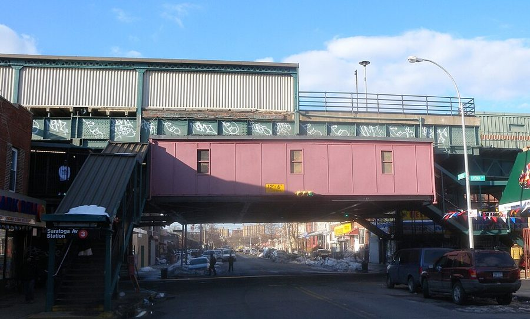
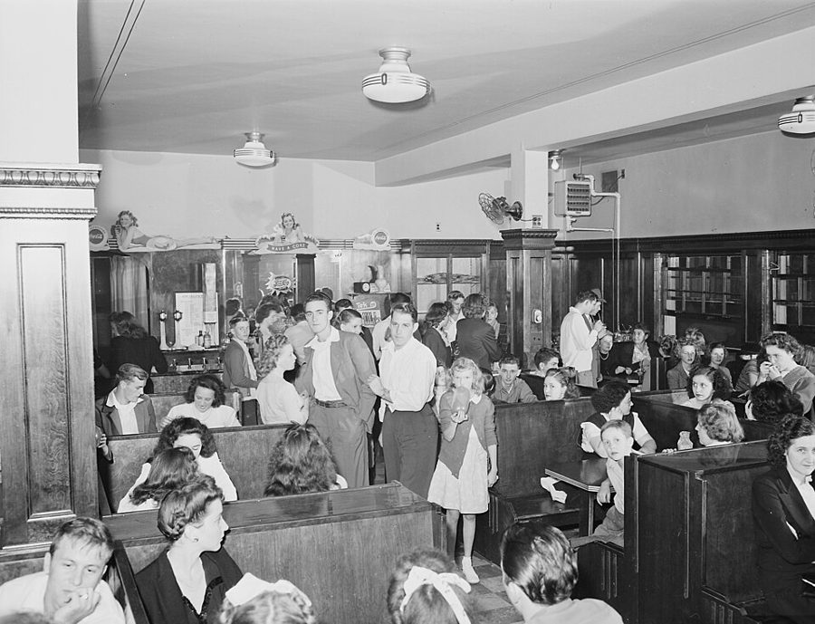
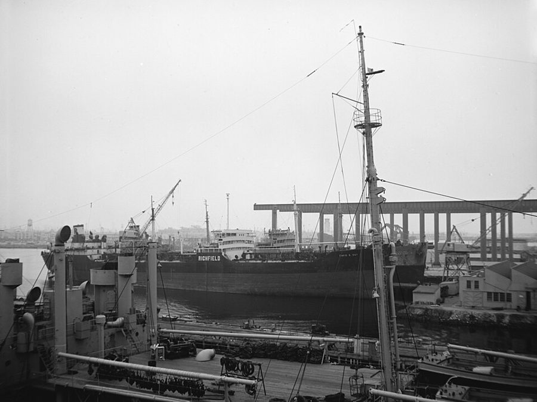
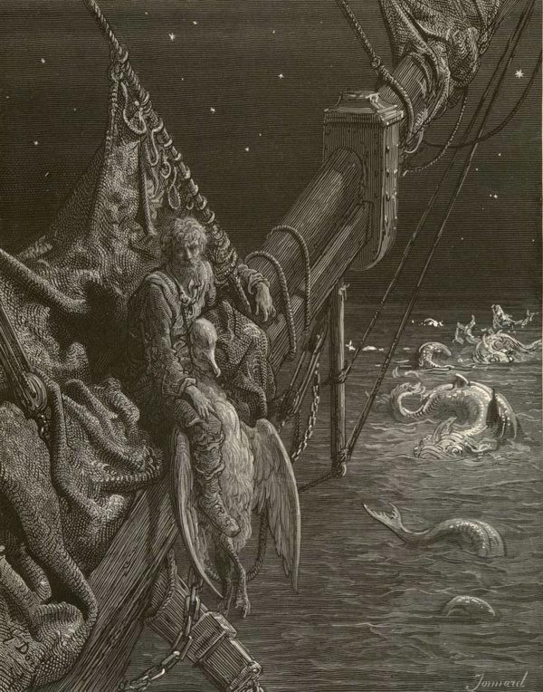

读之前
这一页是回忆录第 4、5 章，从作者八九岁写到十八岁，大约 1935 到 1946 年。第 4 章是他为攒大学学费打过的一串零工，重点是一家贝果面包房和一家冷饮店，街坊里还有黑帮；第 5 章他离开家，上了商船，船上的差事不止一样。读的时候抓两条线：哪些地方、哪些人后来进了小说；父母要他当医生、他自己想当作家，这两件事到了船上怎样碰到一起。
第 4 章又倒回到作者八九岁。到上一页为止：1927 年生在布鲁克林，父母 Willie 和 Betty 两家都是从欧洲经加拿大到纽约的移民，大萧条时父亲失过业。父母一心要他当医生，他把想当作家的念头藏起来，报了医预科。1945 年 4 月，他在纽约大学读一年级，学费是打工攒的；同学劝他去商船队。
读的时候带着这几个问题。不用先找答案，读完回来对照「检查一下理解」。
作者说面包房和冷饮店这两份工一直存在记忆的「地窖」里，等小说用上。读的时候记下哪些人和细节可能进了小说，读完对照「对照小说」。§4 §5
送贝果的司机不肯多说的那件事，作者过了几年才弄明白。留意它是怎样一点点拼起来的。§2 §3 §5
船长给了作者一个他没学过的身份。留意他每一次怎样保护自己，你觉得够不够。§9–§11
作者在船上怎样教自己写作？留意他说的「模仿」，和他最后要找的是什么。§10
分节地图
这一页两章，原书在章内用空行分成 11 节。读完一节打个勾；每节下面的英文是那一节开头的几个词，在 Kindle 里搜它就能跳过去。没读的那几行先模糊着，免得提前看到内容，点一下就能看清。全页约 7200 词，分两次读。
第一次坐下§1–§5 · 约 2700 词 · 第 4 章：攒学费的零工，和街坊里的黑帮
第 4 章 Breaking Dishes约 200 词 IT WAS OBVIOUS TO ME in … 八九岁时的第一门小生意。留意他和街角熟食店老板的关系。 第 4 章（续）约 400 词 In the years that followed, I … 十四岁，凌晨三点起床送贝果。留意司机不肯多说的那家店。 第 4 章（续）约 400 词 At about this time, I got … 对门搬来一个想当拳手的大孩子。留意他要借用的那个外号。 第 4 章（续）约 300 词 I was soon promoted from the … 一段当年写的面包房素描，原样照录。留意里面的动作和人。 第 4 章（续）约 1400 词 The night shift at the bakery … 冷饮店的两位老板。留意那晚进门的四对客人，和老板对作者的称呼。 第二次坐下§6–§11 · 约 4400 词 · 第 5 章：上商船，一个人身兼几样差事
第 5 章 I Become Ship’s Doctor约 300 词 I KNEW THAT JOINING the U.S. … 报名要父母签字。留意他说出口的和没说出口的。 第 5 章（续）约 100 词 After six weeks of basic training … 只有两段，报务学校。留意他在那里认识的人。 第 5 章（续）约 300 词 After Germany surrendered on May 7, … 欧洲的仗打完了。留意他是怎样换了一个职位的。 第 5 章（续）约 1300 词 My first duties as ship’s purser … 登上一艘油轮。留意船长看他袖子时在找什么，和一段海边的回忆。 第 5 章（续）约 900 词 Looking at the ocean now from … 目的地揭晓，船上的差事。留意他向船长要的东西，和他怎样自学写作。 第 5 章（续）约 1500 词 After refueling in Aruba, the Polestar … 返航途中的一个晚上。留意他几次要求「写下来」。
背景：书里默认你知道的事
按在书里出现的顺序排，标题前是节号。作者和这些人之间的事，都是作者自己的说法。
§2 贝果和布鲁克林东头贝果（bagel）是东欧犹太移民带到纽约的面包圈：面团搓成长条、拧成圈，先下开水锅煮一会儿，再进炉烤，所以外皮硬亮、里面有嚼劲。上面撒罂粟籽、芝麻或粗盐。作者长大的 Brownsville 和隔壁的东纽约（East New York）在布鲁克林东头，当时住着大批犹太移民和工人家庭，高架铁路从街上穿过。baker’s dozen（面包师的一打）是十三个，作者特意说那时候没有这种多送一个的规矩。
§3 Charles Atlas 的函授健身课Charles Atlas（1892–1972），本名 Angelo Siciliano，生在意大利，是美国有名的健美明星。他卖一种函授健身课，叫「动态张力」（Dynamic Tension），不用器械，靠肌肉互相较劲来练。广告登在杂志和漫画书上，最出名的一则画的是瘦小子在海滩上被人踢了一脸沙子，练完这套课回去出了气。这本电子书把这个名字扫描成了 Adas（两处都是），原文是 Atlas。
§3 Murder, Inc. 和 Midnight Rose’sMurder, Inc.（谋杀公司）是报纸给一伙职业杀手起的名字。1930 年代他们以 Brownsville 为据点，替纽约和全国的犯罪集团接单杀人。据点是 Livonia 和 Saratoga 两条大道路口、高架铁路下面一家通宵营业的糖果店，人称 Midnight Rose’s，杀手们在店里等电话接活。1940 年 Abe Reles 被捕后转作控方证人，供出了一批同伙。1941 年 11 月 12 日，他在警方看守下从 Coney Island 的 Half Moon 旅馆坠楼身亡；官方说是失足，是逃跑、自杀还是被推下去，至今说不清。
Abe Reles（1906–1941） Murder, Inc. 的杀手 外号 Kid Twist。1940 年转作控方证人，第二年坠楼身亡，见上文。

Livonia Avenue 上的 Saratoga Avenue 高架车站，2011 年 2 月拍。Midnight Rose’s 糖果店当年就开在这个路口的高架下面；照片里是今天的街景。Jim.henderson，CC0，维基共享资源 §5 冷饮店、soda jerk 和快餐厨师1940 年代美国街头的冷饮店（ice-cream parlor），也叫 luncheonette，有一排长柜台和高脚凳，再摆些卡座，卖冰淇淋、汽水、三明治和简单的热菜。站在柜台后面拉汽水龙头、调冰淇淋苏打的伙计叫 soda jerk，jerk 就是拉那根把手的动作；counterman 是站柜台的，short-order cook 是现点现做快餐的厨师。作者后来去的那家在 Brownsville 最热闹的 Pitkin Avenue 上，离 Loew’s 公司的 Pitkin 电影院不远（书里拼成 Lowes’），所以晚饭以后还有一波散场的客人。

1946 年 9 月，肯塔基州 Wheelwright 一个煤矿公司镇上的冷饮店，周六晚上电影开场前挤满了矿工和家人。与本书无关，取它是为了看那个年代冷饮店的样子：卡座、柜台、墙上的可乐广告。Russell Lee，公有领域，维基共享资源 §6 商船队和 Maritime Service商船队（Merchant Marine）是民间的货船、油轮和船员。二战时美国的商船由政府统一调度，往前线运兵、运油、运物资，被潜艇击沉的不少。U.S. Maritime Service 是政府办的船员训练机构，作者先在布鲁克林海边的 Sheepshead Bay 受基本训练，再去纽约港里的小岛 Hoffman Island 上报务学校。G.I. Bill 是 1944 年通过的法律，给退伍军人出大学学费、提供贷款；商船海员算不算在内，见读后的「对照今天」。
Morton Klass（1927–2001） 美国人类学家 作者在报务学校认识的朋友，两人姓都是 K 开头。1945 年加入商船队，后来在哥伦比亚大学的 Barnard 学院教人类学，研究特立尼达和印度的社会。
§9 T2 油轮和事务长T2 是二战时美国成批建造的标准油轮，光是最常见的 T2-SE-A1 一型，1942 到 1945 年就造了 481 艘。Polestar 这个名字是作者改过的：他在 §8 末尾说了，船名、公司名和船上的人名都换了。事务长（purser）管船上的文书、账目和船员的工资，袖子上的标志是两支交叉的羽毛笔。作者说，事务长通常还兼做药剂员（pharmacist mate），那就要再加一个医药的标志。

T2-SE-A1 型油轮 David E. Day，1945 年由 Kaiser 船厂为战时航运管理局建造，照片约摄于 1950 年代初，那时它属于 Richfield 石油公司（中间那艘）。不是作者的船。U.S. Navy Bureau of Ships photo 19-NN-AO-36 Kennebec-146766，公有领域，维基共享资源 §9 老水手之家、古舟子和马尾藻海Sailors’ Snug Harbor 在纽约的 Staten Island，是 Robert Richard Randall 1801 年立遗嘱捐建、1833 年开张的退休海员之家，1976 年迁去北卡罗来纳，老楼今天是文化中心。The Rime of the Ancient Mariner（《古舟子咏》，1798）是 Coleridge 的长诗，Rime 是 rhyme 的古拼法，不是扫描错字：一个老水手拦住去赴婚宴的客人，用枯瘦的手、发亮的眼睛把他定住，讲自己射死信天翁以后船上的遭遇。马尾藻海（Sargasso Sea）在北大西洋中部，四面是洋流而不是海岸，水面漂着成片的马尾藻。

Gustave Doré 为 1876 年版《古舟子咏》刻的插图 I Watched the Water-Snakes：老水手坐在船头的斜桅上，身上系着死去的信天翁，四周海里是水蛇。Gustave Doré，公有领域，维基共享资源 §10 照着名家抄作者说他学的是 Somerset Maugham 的办法：Maugham 在带自传性质的 The Summing Up（1938）里讲，自己年轻时在图书馆里抄写佩服的作家的段落。Hemingway 以短句和不加修饰出名，他在 1935 年的 Green Hills of Africa 里说过，全部现代美国文学都出自 Mark Twain 的一本书 Huckleberry Finn。Faulkner 正相反，以绕来绕去的长句和层层套着的插入语出名。这两位都是作者这时的「老师」。
词与短语
两类：黄边的「每个字都认识」是熟词生义、习语、行话和话里的弦外之音；其余是这里用法特别的词。斜体小字是原句里的几个词，在 Kindle 里搜它就能找到原文。
§1 第 4 章
graduate from
… I quickly graduated from street corner …
（从低一级的活儿）升级
graduate 本义是毕业。graduate from A to B 是从 A 做到更高一级的 B：他从街角摆柠檬水摊，升级到卖汽水和三明治。
squeeze out
… until I was squeezed out by …
被挤出去，被排挤掉
squeeze 是挤、捏。生意上被大一点的对手挤得做不下去。
undercut
… undercut my prices, and drove me …
压价抢生意
undercut someone’s prices 是故意卖得比对方便宜。后面的 drive someone out of business 是逼得对方关门。
§2 第 4 章（续）
frozen custard
… worked the first frozen custard machine …
冻奶冻（一种软冰淇淋）
加了蛋黄的冰淇淋，机器里现做现卖，比普通冰淇淋稠。他说那是 Brownsville 第一台。
baker’s dozen
There were no baker’s dozens then.
面包师的一打：十三个
老规矩是买一打多送一个，怕分量不足挨罚。作者说那时候没这回事，一打就是十二个。
nobody in his right mind
Nobody in his right mind would rob …
脑子正常的人都不会
in one’s right mind 是神志清醒。司机的意思是：那家店谁也不敢抢。
wiseguy
… ask questions about the wiseguys who …
黑道上的人
字面是「聪明人」。纽约俚语里指黑帮成员；另一个意思是自作聪明、爱耍嘴皮子的人。
§3 第 4 章（续）
pump iron
… advice on how to pump iron.
练举重，撸铁
iron 是杠铃、哑铃，pump 是一下一下地举。健身房的口语。
hop a freight
… hopping a freight in the nearby …
扒货运火车
hop 是跳上去，freight 是货运列车。大萧条年代的流浪工（hobo）就这样不买票跑遍全国。
canary
… the canary that could sing but …
（黑话）告密的人
金丝雀会唱，黑话里 sing 是招供，canary 就是向警方供出同伙的人。这是剪报里记者的挖苦。
hit contract
… received their hit contracts from the …
杀人的订单
hit 在黑话里是谋杀，hit man 是职业杀手（剪报里就有）。contract 是「合同」，下单的是老板，接单的是杀手。
§4 第 4 章（续）
urn
… throwing them into the bubbling urn …
（煮贝果的）大锅
urn 一般是坛子、骨灰瓮，或者咖啡店烧水的大壶。这里是滚着开水的大锅，贝果下锅煮过再进炉。
oar
… along the long wooden oar, slides …
（送面进炉的）长木板
本义是船桨。面包师把一排贝果码在长长的木板上推进炉里，形状像桨。素描里的 kiln 本指窑，这里就是烤炉。
§5 第 4 章（续）
soda jerk
… promoted me to soda jerk, then …
冷饮柜台的伙计
见「背景」。jerk 单用是骂人的「蠢货」，在这里只是「拉一下」的动作，没有贬义。
wait tables
… to wait tables in Meyer’s Goody Shoppe.
当餐馆服务员
wait 在这里是「伺候」，不是「等」。Shoppe 是 shop 的仿古拼法，店名故意显得老派。
make good
… who had, as he said, “made good.”
混出了头，有出息了
make good 是成功、发达。作者加了引号，是老板 Goldstein 的口头禅。
work one’s way through college
… who were working their way through college.
半工半读上大学
work one’s way 是一边干活一边往前挣，学费靠自己打工。
liberate
… penetrated his fortress to liberate sugar …
（开玩笑）解救出来，偷回来
这几句故意用打仗的词：sorties（出击）、fortress（堡垒）、penetrate（突破）、liberate（解放），把从老板眼皮底下拿回糖罐说成一场战役。二战时美军常说 liberate 来指顺手拿走东西。
keep someone on their toes
… kept us waiters on our toes …
让人时刻提着神
踮着脚尖，随时准备动。后半句 on each other’s toes 是双关：忙得踩到彼此的脚。
turn a corner
Then one evening my life turned a corner.
（人生）拐了个弯
常用来说「渡过难关、好转」。这里只是说从那晚起方向变了。
break through the line
… arrived and broke through the line, …
插队
line 是门口排的队。break through 是硬闯过去，不是「突破防线」。
station
… and directed them to my station.
（服务员）负责的那几张桌子
餐馆里每个服务员分管一片桌子，叫他的 station。前面说老板查 stations，也是这个意思。
Mazel tov
“Mazel tov!” someone shouted, amid laughter.
恭喜！（意第绪语和希伯来语）
字面是「好运」。犹太婚礼的最后，新郎一脚踩碎一只玻璃杯，宾客齐喊 Mazel tov。客人借这个场面拿摔碎东西的作者开心。
token of my appreciation
… as a token of my appreciation.
聊表谢意（反话）
送礼时的客套话。这里要反着读：他是挖苦着跟老板告别。
put up with
… put up with this crap anymore.
忍受
crap 本义是粪便，口语里是「破事、狗屁」，粗话。
long and hard
He looked at me long and hard.
久久地、仔细地（盯着）
look at someone long and hard 是盯着打量很久，多半带着掂量或不满。think long and hard 是反复想。
§6 第 5 章
three months short of
… three months short of my eighteenth …
差三个月才满
short of 是「不够、差一点」。不满十八岁，报名要父母签字。
pass the physical
“I can pass the physical.”
通过体检
physical 作名词是体格检查（physical examination），不是「物理」。
in the same boat
… guys are in the same boat, Dad.
处境一样
同在一条船上。要去上船的人说这句话，有点一语双关。
G.I. Bill
… law last year—the G.I. Bill—to pay college …
《军人重新安置法》
G.I. 是美国大兵的俗称。这部 1944 年的法律给退伍军人出学费、发补贴、担保贷款。见「背景」和读后的「对照今天」。
ship out
… Jack London had shipped out for …
（作为船员）出海
Jack London 十七岁上了一艘去北太平洋猎海豹的纵帆船，后来写了 The Sea-Wolf（1904）。记录上那趟航程七八个月，作者记成了一年。
§7 第 5 章（续）
Sparks
… being called Sparks. Perhaps that would …
（船上）报务员的外号
spark 是火花，早年无线电报靠电火花发报，船上就管报务员叫 Sparks。后面船上那位报务员就叫这个名字。
§8 第 5 章（续）
wiper
Mort sailed as an engine room wiper
机舱的擦拭工
商船机舱里最低一级的工种，擦油污、打杂。
replacement depot
… fresh troops to the replacement depot— …
补充兵站
新兵先到这里，再分到缺人的部队。士兵们把它念成顺口的 repo depo。
tour of duty
… completed their European tours of duty.
服役期，一轮驻防
tour 不是「旅游」，是一段规定的服役时间。
shore leave
Shore leave in Le Havre was short,
上岸假
船员靠港时获准上岸的时间。leave 作名词是「假」。
crossed quills
… with crossed quills above one gold stripe …
交叉的两支羽毛笔（事务长的标志）
quill 是鹅毛笔，代表文书工作。一道金杠表示军衔是最低一级的少尉（ensign）。
§9 第 5 章（续）
ship’s articles
… the men’s signing of ship’s articles …
船员雇佣合约
articles 不是「文章」，是条款。船员签了它才算受雇上这一趟船，下船时再签离船。
A slip of the lip can sink a ship
… A SLIP OF THE LIP CAN SINK …
说漏一句嘴，就能沉掉一条船
二战时美国的保密标语，押韵好记。slip of the tongue / lip 是说漏嘴。船期和航线会被敌方潜艇利用。
ride high
Empty of cargo, the ship rode high,
（空船）吃水浅，船身高出水面
ride 说船浮在水上的样子。口语里 riding high 还是「春风得意」，这里是字面意思。
caduceus
… gold braid crossed quills. “Where’s the caduceus?”
双蛇杖（医药的标志）
原是希腊神 Hermes 的手杖，带翅膀、缠着两条蛇，美国常拿它代表医疗。严格说医学的标志是不带翅膀、只缠一条蛇的 Asclepius 之杖；作者下一段说的「带翅膀、缠着一条蛇」，把两样混在了一起。
merit badge
… First Aid Expert merit badges in …
童子军的技能徽章
童子军学会一项本事（急救、游泳、打绳结）就发一枚布章，缝在制服上。
short-arm inspection
… do short-arm inspections after every shore leave.
（军中俚语）性病检查
short arm 是对男性生殖器的委婉说法。部队和船上在士兵上岸回来后例行检查有没有染上性病。
No buts about it
“No buts about it! You’re ship’s doctor.”
没有「可是」，就这么定了
but 在这里当名词用，接着作者刚说的 But, Captain。
me and my big mouth
Me and my big mouth.
都怪我这张嘴
big mouth 是多嘴、说大话。骂自己说了不该说的话。
a far cry from
… was a far cry from being …
和……差得远
字面是「远处的一声喊」，喊得再响也够不着。
guntub
… ladders to an empty guntub, where …
（甲板上的）炮位
四周围着矮墙的圆形炮座，像个盆（tub）。战时商船上装过高射炮，这时已经拆了。
the oceanic feeling
… I experienced “the oceanic feeling,” and …
「海洋般的感觉」
一种和万物连成一片、没有边界的感觉。法国作家 Romain Rolland 在信里向 Freud 提起，Freud 在《文明及其不满》（1930）开头讨论了它。作者在这里也是字面的意思：四面全是海。
follow the sea
… Sailors’ Snug Harbor, followed the sea.
以航海为业
follow 一个行当，是一辈子干这一行。不是「沿着海走」。
old salt
… one weather-beaten old salt.
老水手
salt 指在海上泡了半辈子的人。weather-beaten 是被风吹日晒出来的样子。
§10 第 5 章（续）
take on bunkers
There we take on bunkers for …
加船用燃料
bunker 本是船上的燃料舱，引申为船自己烧的油、煤。不是「掩体」。
slip up
… ointment kits, but he slipped up.
疏忽，出了差错
脚下一滑。上一任事务长该备的货没备。
Smart-Ass
Which I mentally translated as, Smart-Ass.
自作聪明的家伙（粗话）
船长只哼了一声「Eh?」，作者在心里替他翻译成这个词。
around the clock
… every four hours around the clock …
昼夜不停
时针转满一圈，二十四小时都不断。
slop chest
… openings of the slop chest for …
船上的小卖部
slops 原指水手的廉价衣物。船上卖烟、糖和日用品的箱子或小铺，由事务长管。
draw
… give the men a draw, advancing …
预支的工资
作名词，是从还没发的工资里先支取一部分。
jump ship
To prevent them from jumping ship …
（船员）擅自离船不归
不是跳海。在港口上了岸就不回来了。所以预支只给挣到的一半。
try one’s hand at
… to try my hand at writing …
试着做，练练手
头一回动手做一件事。
simple declarative sentence
… to write simple declarative sentences devoid …
简单陈述句
一个主语一个谓语、直接陈述的句子。下一段的 complex sentence（复合句）、parenthetical（插入语）是对着它说的。
wean oneself from
Eventually, I weaned myself from both …
（像断奶一样）戒掉，摆脱
wean 本义是给孩子断奶。他不再照着那两位写。
§11 第 5 章（续）
homeward bound
Then we were homeward bound, with …
返航途中
bound 在这里是「开往」，和 New York-bound（开往纽约）一样，不是「捆住」。
fo’c’sle
A crowd outside the fo’c’sle parted …
船头的水手舱
forecastle 的水手读法和缩写，读作 /ˈfoʊksəl/。普通水手住在船头，高级船员住在船中或船尾。
Cookie
… after Cookie closed it, and stole …
（船上、营地里对）厨子（的叫法）
从 cook 来，不是饼干。
spell
… how to spell me, and he …
替（某人）的班
spell 作动词还有「轮换、接替」的意思，不是「拼写」。
goner
“I think he’s a goner.”
没救了的人
从 gone 来，口语。
bring someone up on charges
… bring you up on charges when …
把人送去受审，起诉
charge 是指控。前半句的 brig 是船上的禁闭室。
Boats
“What is it, Boats?”
（对）水手长（的叫法）
bosun（boatswain）是带甲板水手干活的头儿，船上叫他 Boats，和管报务员叫 Sparks、管厨子叫 Cookie 一样。
take to
The men don’t take to the idea …
接受，喜欢（一个主意）
take to something 是对它有好感、能接受，不是「拿到」。
Jonah
… spread that I was a Jonah …
给船带来厄运的人
出自《圣经·约拿书》：约拿上了船，船就遇上风暴，水手们把他扔下海才平息。水手的迷信里，船上有了 Jonah 就要出事。
hit home
… the gangway, his words hit home.
（话）说到心里去了
打中了要害。一句话让人真正意识到什么。
对照小说
作者在这两章里讲了小说好几处是从哪里来的。一张卡片一件事：回忆录里怎么说，小说里落在哪一页；点链接回到那一页。右上角是回忆录这一页的节号。
面包房的素描 作者在贝果面包房做帮手，后来写过一段素描：发白的墙和地，面团搓成长条、手腕一拧成个圈，一个跛脚的面包师。他说长篇用了这个场景。报告 10 里 Gimpy 教查理做面包卷，也是搓长条、拧成圈；Gimpy 也跛脚。小说里的面包店烤的是面包和面包卷，不是贝果。
报告 10 · 4 月 21 日 §4 打碎的盘子 作者说，他在冷饮店当众摔了一托盘、被老板骂作 moron，所以写得出查理在餐馆看见洗碗男孩打碎盘子的那一场。两边的客人都喊 Mazel tov，都说打碎比洗省事。回忆录里引的老板那句和小说原文字句略有出入；小说里的男孩是新来洗碗的，约十六岁。
报告 14 · 6 月 24 日 §5 同一份书单 作者在船上的图书馆里照着 Hemingway 学写短句，照着 Faulkner 学写长句和比喻。报告 10 里查理泡在图书馆，读的作家里也有 Hemingway 和 Faulkner，还有 Dostoevski、Flaubert、Dickens。作者没有说这份书单是照自己开的，这是本站对上的。
报告 10 · 4 月 27 日 §10 文体的起落 讲完怎样学写，作者接着讲查理的文体：开头直白、孩子气、没有比喻；变聪明以后句子从并列到复合，越来越绕、越来越多比喻；能力退下去时又变简单，最后几乎不识字。本站的文字曲线量的就是这一路起落，最后一篇报告又回到了开头的样子。
报告 17 · 11 月 21 日 §10
一场打碎盘子的戏，两个版本
回忆录 §5 · 冷饮店
小说 报告 14 · 餐馆
谁打碎了盘子 作者自己，端着咖啡和三明治 新来的洗碗男孩
老板骂什么 moron，college boy dope，idiot
客人起哄 Mazel tov！打碎比洗省事 Mazel tov！打碎比洗容易
年纪 十七岁上下 约十六岁
讲故事的人 就是挨骂的那一个 查理在一旁，起先也跟着笑
本站对照表，按回忆录 §5 和小说报告 14 的 6 月 24 日那一条整理。左右两边客人起哄的话几乎一样；换掉的是谁站在哪儿：回忆录里讲故事的人就是出了丑的那个，小说里讲故事的查理成了旁观的客人。 值得停下来的句子
I was able to see it through Charlie’s eyes and feel his emotions. I was able to write it, because it happened to me.— §5，第 4 章末尾，引完小说里查理冲客人喊的那几句之后。本站译：我能透过查理的眼睛去看，感受他的情绪。我写得出来，是因为这事在我身上发生过。
两句都用 I was able to 开头，像在给前面那一长段冷饮店的经历下结论。对照一下上面的表：冷饮店里出丑的是作者自己，小说里出丑的是那个男孩，查理是坐在一旁、起先也跟着笑的客人。本站的读法是，作者借来的不只是挨骂的滋味，还有当时围着看、笑着的那一圈人；写进小说时，他把查理放到了那一圈人里，让查理自己认出来。
Like Somerset Maugham and Chekhov and Conan Doyle, I had been a doctor for a while, and like them I had failed.— §11，第 5 章最后一段。本站译：像毛姆、契诃夫和柯南·道尔一样，我当过一阵子医生；也像他们一样，我失败了。
这三个名字是回忆录第 1 章就出现的：作者给自己找的榜样，都是先学医、后来当了作家的人。这一章 §6 他跟父母说起他们，心里知道三人当医生都失败了，只是没说出口。到了这里，失败成了一张通行证：既然榜样们也是这样走过来的，他就可以接着走下一步了。这句话里没有一个字讲那个死去的水手，可整段话是从水手长那句「医生也有失手的时候」来的。
读完想一想
1. 作者说他写得出报告 14 那一场，是因为这事在他身上发生过（§5）。可他和那个男孩不一样：他是「college boy」，当晚就能辞职走人，男孩不能。只经历过一点点，够不够让人写出别人的处境？
本站的看法 本站的看法：大概不够，但他也没说够。他说的是「透过查理的眼睛看」，不是「透过那个男孩的眼睛看」。小说也是这样写的：那一场是查理在看，查理认出了自己，羞愧的是查理。男孩心里怎么想，小说一个字没写，只写了他跟着大家笑。作者借自己的经历写的是旁观者的醒悟，而不是替那个男孩说话。读者可以想想，这样的分寸是不是也是一种尊重。
2. 船长一句话就让作者当了「船医」，他一再要书面的任命和命令（§10、§11）。他做得对吗？换了你，在那个晚上会怎么做？
本站的看法 本站的看法：要书面命令是聪明的，他自己也说多亏有它。可它保护的是他的处境，不是病人：那一晚该做什么，船长、海军医生和他其实都不知道，大家都在按电报办事。真正让人难受的是 §11 末尾：调查说他没有责任，船员们却认定他是带来厄运的人。法律上的清白和心里过不过得去，是两回事。作者的结论是从此不当医生，这也是一种回答。
3. 作者对父母说「当医生是职业，写作是爱好」，心里想的却是 Jack London（§6）。他骗了父母吗？你有没有为了让家里放心，说过类似的话？
本站的看法 本站的看法：说的话是真的，没说出口的才是他的打算。这一章里他好几次「想了但没说」：没告诉父母三位榜样当医生都失败了，也没告诉他们 Jack London。到最后他说自己守住了对父母的承诺，确实行过医，然后才转身去写作。这像是他给自己找的一个两边都交代得过去的说法。读者可以对照小说里查理和母亲 Rose 的关系，想想父母的期望压在孩子身上，各自是怎么走出来的。
对照今天
成立 后来的事实印证了这个说法部分成立 一部分对，一部分被后来的事改了被改写 后来的事实推翻了它，或者完全变了样书里的说法：在 Maritime Service 服役，不能享受 G.I. Bill 的待遇（作者，§6）
书里 作者跟父亲说，退伍后靠 G.I. Bill 可以免费读完大学；接着他说，当时不知道商船的服役不算。
当时 1944 年的 G.I. Bill 只给军人。商船海员是民间雇员，战时虽然由政府调度、也有不少人死在海上，战后却没有法律给他们退伍军人身份，读大学、医疗、伤残这些福利都没有份。作者说的这一点，在当时是对的。
今天 四十多年后才变：一批二战商船海员打了官司（Schumacher v. Aldridge，1987 年判决），1988 年国防部门认定战时在远洋船上的服务算现役，这些人可以申请退伍军人身份。但范围有限，有的人只拿到安葬方面的待遇；那时他们早已过了读大学的年纪，书里说的那笔学费也补不回来。核对于 2026-10。依据：美国国会研究处报告 Veterans’ Benefits: Eligibility of Merchant Mariners（R44162）。
书里的说法：马尾藻海是鳗鱼游回去交配、产卵、死去的地方，也是困住船的坟场（Snug Harbor 的老水手说的，作者转述，§9）
书里 老水手说，船被风刮进马尾藻海，困在海草里，成了船和死人的坟场；成百万条鳗鱼从几千英里外游回那里，交配、产卵、死去。
当时 鳗鱼这一半有根据：丹麦生物学家 Johannes Schmidt 在大西洋上一路追着越来越小的鳗鱼幼体，1922 年发表论文，推定马尾藻海就是欧洲鳗和美洲鳗的产卵地。困船这一半是航海传说，1910 年挪威考察船 Michael Sars 号去看过，那里的海草是一片片漂着的，困不住船。
今天 2022 年一篇论文给亚速尔群岛的 26 条欧洲鳗装了卫星标签，第一次直接追到成年鳗游进推定的产卵区。但至今没有人在那里捞到过鳗鱼卵，也没人亲眼看见它们产卵，老水手说的这一半仍是推断。困住船的坟场，今天没有人当真。核对于 2026-10。依据：Schmidt 1922 年《英国皇家学会哲学汇刊》论文；1911 年版《不列颠百科全书》Sargasso Sea 条；Wright 等 2022 年 Scientific Reports 论文。
检查一下理解
先在心里答，再点开。答错的那题，回书里把对应那一节再读一遍。
1.（§2）送贝果时，哪种贝果最让作者手疼？ 撒盐的。他要一手抓三个还烫的贝果，手上的皮早磨破了，盐碰到伤口最疼；罂粟籽和芝麻的也刮手。
2.（§3）作者后来怎样明白了司机说的 Midnight Rose’s？ 1941 年 11 月的一则剪报讲 Abe Reles 坠楼。他这才知道那家糖果店是 Murder, Inc. 的杀手们接电话接活的地方，而对门那个想当拳手的大孩子，借用的正是哥哥 Reles 的外号。剪报登出后不久，那一家人不声不响搬走了。
3.（§5）那天晚上 Goldstein 为什么一反常态？作者是怎么摔的？ 四对插队进来的客人常在 Midnight Rose’s 出没，Goldstein 亲自把他们领到作者的台上，一路跟着吼。作者手一抖，碟边的玻璃奶罐晃起来，掉了一个，他想在第三下弹跳之前踢开，没踢着，接着整条胳膊上的盘子全掉了。
4.（§6）作者以为参加 Maritime Service 有什么好处？他当时不知道什么？ 他对父母说，退伍以后能靠新通过的 G.I. Bill 免费念完大学。他当时不知道，商船队的服役不算，拿不到 G.I. Bill 的待遇。
5.（§9）船长为什么一见面就提船上的医务室？ 船长向航运专员要的是兼做药剂员的事务长，他看作者的袖子上只有交叉的羽毛笔、没有医药的标志，才知道弄错了。作者脱口说自己在童子军里当过「船医」，船长就让他兼了。
6.（§11）调查说作者没有责任，为什么船员们还是躲着他？ 水手迷信，死过人的船被看成不祥。大家都看见或听说他骑在死者背上、念叨着「坏空气出去，好空气进来」，传成了他把人的魂送下了地狱，是带来厄运的 Jonah。下一趟只有高级船员签约。
用一句话说这一页：
精彩回顾
隔几周回来，先看这几张卡片。想不起来的那张，点节号回到这一页，再回书里那一节。
一句话： 作者为攒学费打过的零工里，面包房和冷饮店后来进了小说；他上了商船，被船长硬派成「船医」，失去了一个病人，也放下了当医生的路。
撒盐的贝果 十四岁，凌晨三点起床，坐在没有靠背的副驾驶座上，一手抓三个滚烫的贝果往袋里装。撒盐的那种碰到磨破的手最疼。
§2 通宵亮灯的糖果店 天没亮，街角一家糖果店亮着灯。作者以为遭了抢，司机笑他：Midnight Rose 的店没人敢抢。几年后一则剪报让他明白了为什么。
§2–§3 第三下弹跳 玻璃奶罐掉在地上，第三下才会碎，赶在那之前踢开就能保住。那天晚上他没踢着，接着整托盘都摔了，满堂喊 Mazel tov。
§5 「别把船上的东西都打碎」 辞工那晚，老板先喊他 moron，再喊他「聪明的大学生」，最后叮嘱他别把船上的东西都打碎。
§5 写在餐巾上的任命 船长说「你就算被任命了」，作者坚持要白纸黑字。船长瞪了他一眼，在餐巾上写了几句，作者折好收进钱包。
§10 坏空气出去，好空气进来 那一晚他骑在一个水手背上，照童子军学的办法一下下按，嘴里念着这句口诀，一直念到午夜。
§11